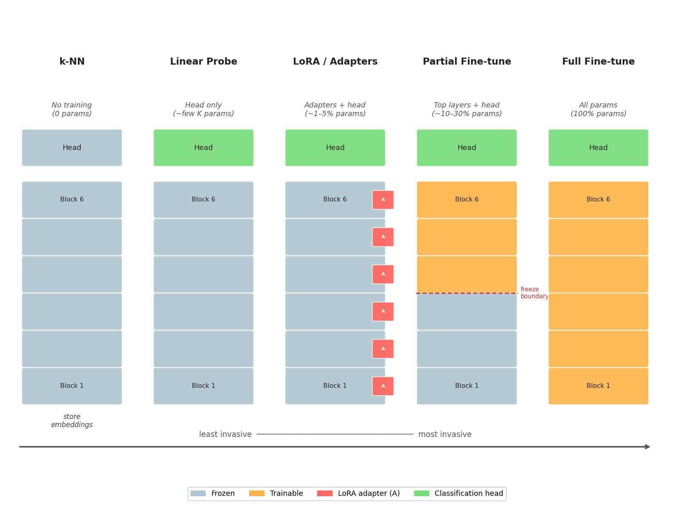

import torch, sklearn.neighbors as sk
from transformers import AutoModel, AutoImageProcessor
model_id = "google/vit-base-patch16-224"
enc = AutoModel.from_pretrained(model_id).eval()
proc = AutoImageProcessor.from_pretrained(model_id)
def feats(imgs): # imgs: list of PIL images
px = proc(imgs, return_tensors="pt")["pixel_values"]
with torch.no_grad():
z = enc(pixel_values=px).last_hidden_state[:,0] # [CLS]
return z.cpu().numpy()
Xtr = feats(train_images); Ytr = train_labels
Xte = feats(test_images)
knn = sk.KNeighborsClassifier(n_neighbors=5).fit(Xtr, Ytr)
pred = knn.predict(Xte)6 - Adapting Models
TipLearning Objectives
After this lecture you should be able to:
- Select the right adaptation strategy — k-NN, linear probe, LoRA, partial fine-tuning, or full fine-tuning — for a given task and dataset size.
- Implement each adaptation strategy in PyTorch using timm and Hugging Face libraries.
- Apply the decision framework based on dataset size, domain similarity, and compute constraints.
- Explain why starting with the simplest strategy is both efficient and diagnostic.
- Identify when domain shift requires a more aggressive adaptation approach.
TipTLDR Recap
The guiding principle: Always begin with the simplest approach and add complexity only when performance gaps justify it.
Five adaptation strategies (simplest → most expensive):
| Strategy | Trainable params | When to use |
|---|---|---|
| k-NN | 0 | Quick quality check; no labels needed for fitting |
| Linear probe | Head only | Good embeddings, small dataset, stable training |
| LoRA / Adapters | ~1–5% of model | Moderate dataset; keep most pretrained knowledge |
| Partial fine-tune | Top layers + head | Larger dataset; encoder needs task-specific tuning |
| Full fine-tune | All params | Large dataset; significant domain shift |
Decision heuristics:
- Dataset < 1K images → k-NN or linear probe
- Dataset 1K–10K → LoRA or partial fine-tune
- Dataset > 10K + domain shift → full fine-tune
- No labels at all → zero-shot with CLIP
- Compute-constrained → never go beyond linear probe at inference
1 Motivation
The previous lecture introduced how pretrained models encode images into compact embeddings. The natural next question is: given such a model, how should it be adapted to a specific task with a limited set of labeled examples?
The answer depends on three factors that are always in tension — the amount of labeled data, the similarity between the pretraining domain and the target domain, and the available compute budget. Understanding how these factors interact determines the right strategy without needing to try all five.
2 The Adaptation Hierarchy
A pretrained encoder rarely needs to be trained from scratch for a new task. The following five strategies form a hierarchy from least to most invasive. The rule is simple: start at the top and descend only when performance demands it.

2.1 k-NN Baseline (No Training)
The simplest possible approach: store the embeddings of labeled images and, for a new image, look up the \(k\) most similar ones by cosine distance — the majority label wins. No training is required. The result is a direct measure of representation quality. If k-NN performance is already acceptable, there is no need to proceed further.
NoteCode: k-NN baseline
2.2 Linear Probe (Freeze Encoder, Train Head)
Keep the pretrained encoder fixed and train a single linear layer on top. If this small head achieves good accuracy, the encoder’s embeddings already separate the target classes well. The approach is cheap, stable, and provides a strong baseline for assessing transfer quality.
NoteCode: linear probe
import torch
from torch import nn, optim
import timm
backbone = timm.create_model("vit_base_patch16_224", pretrained=True)
for p in backbone.parameters():
p.requires_grad = False
embed_dim = backbone.num_features
head = nn.Linear(embed_dim, num_classes)
def forward(images):
with torch.no_grad():
z = backbone.forward_features(images)[:,0] # [CLS]
return head(z)
opt = optim.AdamW(head.parameters(), lr=5e-4)
# training loop: logits = forward(images); loss = CE(logits, y); loss.backward(); opt.step()2.3 LoRA / Adapters (Parameter-Efficient Fine-Tuning)
Instead of updating all weights, small adapter modules (or low-rank updates) are inserted and only those are trained. The original knowledge is largely preserved while the model adapts to the target task with far fewer trainable parameters — faster to train and less prone to overfitting than full fine-tuning (Hu et al. (2021)).
NoteCode: LoRA / Adapters
import torch
from transformers import AutoModel
from peft import LoraConfig, get_peft_model
model_id = "google/vit-base-patch16-224"
model = AutoModel.from_pretrained(model_id)
config = LoraConfig(
r=16, lora_alpha=32, lora_dropout=0.05,
target_modules=["query","key","value","fc"],
bias="none", task_type="FEATURE_EXTRACTION"
)
model = get_peft_model(model, config)
head = torch.nn.Linear(model.config.hidden_size, num_classes)
def forward(pixel_values):
z = model(pixel_values=pixel_values).last_hidden_state[:,0]
return head(z)
# Optimizer over LoRA params + head params only2.4 Partial Fine-Tuning (Unfreeze Top Layers)
Unfreeze only the last few transformer blocks plus the classification head. Earlier layers — which encode general low-level features — remain frozen. This provides a good middle ground between the speed of a linear probe and the flexibility of full fine-tuning.
NoteCode: partial fine-tuning
import timm, torch
from torch import nn
model = timm.create_model("vit_base_patch16_224", pretrained=True)
# Freeze everything
for p in model.parameters():
p.requires_grad = False
# Unfreeze top transformer blocks
for p in model.blocks[-2:].parameters():
p.requires_grad = True # last 2 blocks
# Replace classification head
model.head = nn.Linear(model.num_features, num_classes)
trainable = [p for p in model.parameters() if p.requires_grad]
opt = torch.optim.AdamW(trainable, lr=1e-4)2.5 Full Fine-Tuning (Last Resort)
Train all weights on the target dataset. This can yield the best task alignment but is computationally expensive and risks overfitting with limited data. Use it only when simpler approaches have plateaued and sufficient data and compute are available.
NoteCode: full fine-tuning
import torch
from transformers import AutoModelForImageClassification
model_id = "google/vit-base-patch16-224"
model = AutoModelForImageClassification.from_pretrained(
model_id, num_labels=num_classes, ignore_mismatched_sizes=True
)
for p in model.parameters():
p.requires_grad = True # unfreeze all
opt = torch.optim.AdamW(model.parameters(), lr=5e-5)
# Standard supervised loop with processor(...)-> pixel_values -> model(pixel_values, labels=y)3 Choosing an Adaptation Strategy
Knowing the five strategies is necessary but not sufficient. The key skill is knowing which one to use without having to try all five. Three factors determine the right choice.
3.1 Dataset Size and Domain Similarity
The most important factor is how much labeled data is available, combined with how similar the target domain is to the pretraining distribution (typically ImageNet-scale natural images).
| Dataset size | Domain similar to ImageNet | Domain different (medical, satellite, …) |
|---|---|---|
| < 500 images | k-NN or linear probe | k-NN; try LoRA if linear probe fails |
| 500 – 5K | Linear probe or LoRA | LoRA or partial fine-tune |
| 5K – 50K | Partial fine-tune | Partial or full fine-tune |
| > 50K | Full fine-tune | Full fine-tune |
The reasoning is intuitive. With limited data, the pretrained features are already strong — destroying them with aggressive fine-tuning is likely to hurt. With large data from a dissimilar domain, the pretrained features may not capture what matters, and the model needs freedom to learn new representations.
🤔 Think About It
A team has 800 labeled chest X-ray images for a pneumonia classification task, using a DINOv2 backbone pretrained on natural images. Which strategy should they try first, and what should concern them about the domain?
Key considerations
With 800 images and a domain gap (medical imaging vs. natural images), the recommendation is to start with LoRA or a linear probe:
- A linear probe is fast and immediately reveals whether the DINOv2 features transfer at all to X-rays.
- If the linear probe fails (say, accuracy barely exceeds random chance), it suggests significant domain shift — the features encode natural-image structure that does not exist in chest X-rays.
- In that case, LoRA (or partial fine-tuning) allows the encoder to adapt its higher-level features while preserving lower-level edge and texture detectors.
- Full fine-tuning with only 800 images is risky — strong regularization (weight decay, dropout, early stopping) would be essential.
A practical first step: plot the k-NN accuracy as a function of \(k\). If it is near random, the features are not transferring and more adaptation is needed.
3.2 When Domain Shift Is Large
Domain shift occurs when the target images look substantially different from the pretraining data. Common examples include:
- Medical imaging: X-rays, histology slides, ultrasound — very different from natural scene photos
- Remote sensing: aerial and satellite imagery — different scale, texture, and perspective
- Industrial inspection: close-up surface images — different resolution and subject matter
In these cases, the lower layers of the pretrained model (edge detectors, texture detectors) tend to transfer well, but the higher layers (semantic concepts from natural images) may not. The practical recommendation is to fine-tune the top half of the encoder while keeping the lower layers frozen, or to use LoRA with a higher rank to allow more flexibility.
When even partial fine-tuning fails, it may indicate that the backbone itself should be swapped — for instance, using a model pretrained on domain-specific data (e.g., a ViT pretrained on biomedical images via BioViL or CheXzero) instead of a general-purpose backbone.
3.3 Compute Considerations
The adaptation strategy also constrains inference cost:
- k-NN and linear probe add negligible overhead at inference — the backbone runs once per image.
- LoRA at inference can be merged into the base weights (zero overhead) or kept separate (small overhead).
- Partial and full fine-tuning change the backbone weights but do not increase inference cost.
- Edge deployment: if the model must run on a mobile device or embedded hardware, the backbone itself may need to be replaced with a more efficient architecture (MobileNet, EfficientNet-Lite), independent of the adaptation strategy.
NoteQuiz: Adaptation Strategy Selection
Question: You have a dataset of 1,000 labeled medical images for a specialized classification task. Describe the recommended progression of adaptation strategies and explain why you should start with the simplest approach.
Click for Answer
Answer:
Recommended Progression (from simplest to most complex):
- k-NN Baseline (0 training):
- Extract features with frozen pretrained model
- Classify by finding k nearest neighbors in feature space
- Why first: Instant results, no hyperparameters, reveals representation quality
- Code: Just
sklearn.KNeighborsClassifier(n_neighbors=5).fit(features, labels)
- Linear Probe (~1-10K parameters):
- Freeze encoder, train only linear classification head
- Why next: If this works well, embeddings already separate classes
- Benefit: Fast, stable, minimal overfitting risk with 1K samples
- LoRA/Adapters (~100K-1M parameters):
- Add small adapter modules, train only those
- Why: Allows task-specific adaptation without full fine-tuning
- Trade-off: Better fit than linear probe, much cheaper than full fine-tuning
- Partial Fine-tune (last 2-3 layers):
- Unfreeze top transformer blocks + head
- Why: Adjust high-level features while keeping general low-level features
- Risk: Need careful learning rate tuning to avoid catastrophic forgetting
- Full Fine-tune (all parameters) — Last Resort:
- Only if: Previous methods plateau AND you have sufficient data
- Risk: With only 1K samples, high overfitting risk
- Mitigation: Strong regularization, small learning rates (1e-5), early stopping
Why Start Simple:
- Diagnostic value: If k-NN works, you know the representation is good
- Resource efficiency: Avoid wasting compute on complex methods when simple ones suffice
- Overfitting prevention: With limited data (1K samples), simpler models generalize better
- Baseline establishment: Each step provides a performance ceiling to beat
Medical Imaging Specific: Consider domain shift — medical images may differ significantly from natural images (ImageNet). If k-NN/linear probe fail, the pretrained features may not transfer well, suggesting need for more adaptation or domain-specific pretraining.
4 References
Hu, Edward J., Yelong Shen, Phillip Wallis, et al. 2021. LoRA: Low-Rank Adaptation of Large Language Models. arXiv. https://doi.org/10.48550/arXiv.2106.09685.